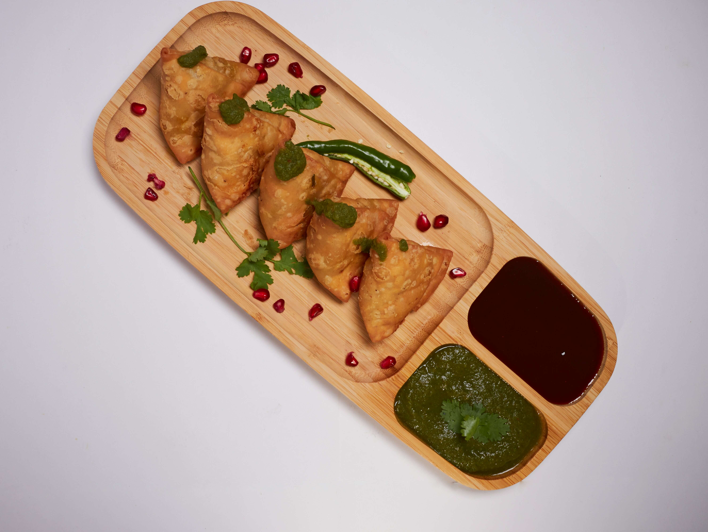

Samosa

Description
Samosa is a popular Indian snack known for its crispy, golden-brown pastry filled with a flavorful mixture of spiced potatoes and peas. It is a delicious appetizer enjoyed with chutney and tea, commonly found in Indian households and street food stalls.
Ingredients
- Dough:
- 2 cups all-purpose flour
- 4 tbsp oil or ghee
- Water (as needed)
- Salt (to taste)
- Filling
- 3-4 boiled potatoes (mashed)
- 1/2 cup green peas (boiled)
- 1 onion (finely chopped)
- 2 green chilies (chopped)
- 1 tsp ginger (grated)
- 1 tsp cumin seeds
- 1 tsp coriander powder
- 1/2 tsp garam masala
- Salt (to taste)
- Oil (for frying)
Steps
- Prepare dough by mixing flour, salt, and oil, then adding water gradually to form a stiff dough. Rest for 30 minutes.
- Heat oil in a pan, add cumin seeds, onion, chilies, and ginger. Sauté until golden.
- Add potatoes, peas, coriander powder, garam masala, and salt. Cook for 5 minutes and let it cool.
- Roll the dough into discs, cut in half, form a cone, fill with the potato mixture, and seal the edges.
- Heat oil and deep-fry samosas on medium heat until golden brown. Serve hot with chutney.
Home